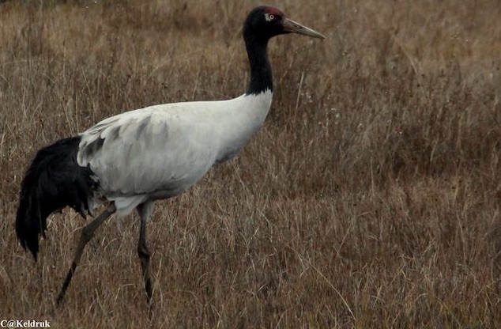

Punakha
Punakha is well known for the majestic fortress which stands at the confluence of two rivers. It is also the old capital of Bhutan. Kings of Bhutan are formally crowned in Punakha as per age old tradition. Tourist attractions in Punakha are:
- Punakha Dzong:
- River Rafting:
Punakha Dzong (fortress) is one of the oldest structures in Bhutan, build in the 15th century. It lies at the confluence of two rivers, Pochu and Mochu. It hosts the annual Punakha Domchoe, a three day traditional festival.
Tourists come to experience river rafting on the rivers of Punakha.
Birders from all over the world flock to Phobjikha during winter to see the cranes arrive from Tibet.